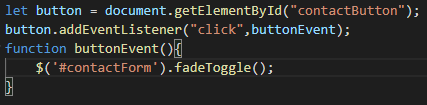

About me

I upadted my portfolio site with two new features that used javascript but they essentially do the same thing as far as the code goes. The first update was to change the contact section to a single button that when click reveals the whole scetion as most people won't need to use it. The second feature is that on the project cards there is now a summary button which when clicked displays a brief explanation of the project.
To get the contact part done I used the jquery function fade toggle which fades the elements in if they are faded out and fades the elelments out if they are already faded in. For the contact section it was fairly strait forward I simply used an eventListener for a click of the button and had the called funciton use fadeToggle on the contact seciton contents which I have already hidden from diplay. I had some issues with syntax intialy combining the querey calls with $ with normal javascript syntax but after a few tries I sorted it out.
The summary addtion to the projects section was a little more extensive. To do this I had to create new card that are hidden and then when the summary button is clicked. Previously the entire card was a link to the project but this had to be changed to everything befoew the summary/overview buttons.
Overall the changes were not massive but it did take a decent bit of time figuring out what I wanted to do and a lot more time spent on figuring out exactly how am I supposed to do that.